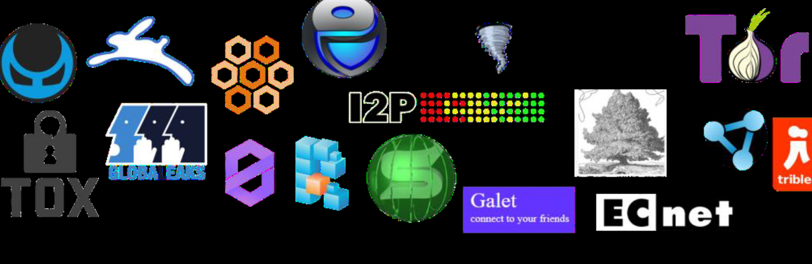
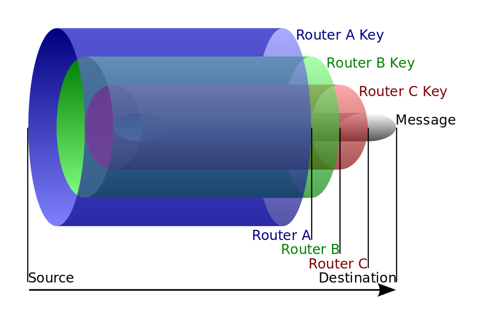

Como acessar a Deep Web?
Agora que a maioria das questões quanto ao funcionamento da Deep Web já foram esclarecidas, iremos aborda as duas principais características de qualquer rede da DeepWeb são a descentralização e o anonimato. Portanto existe diversas redes que garante esses dois pilares como:
Sendo que a mais ultilizada para acessar esse tipo de serviço é a rede onion,muitas vezes confundida com toda a Deep Web, por causa da sua popularidade.Acessada a partir do navegador Tor, a rede funciona de forma descentralizada.
possui uma VPN integrada, na qual pacotes são encapsulados na forma de camadas de criptografia, como em uma cebola. Esses pacotes são distribuídos em uma série de nós da rede (os chamados onion routers), cada um responsável por remover uma camada de encriptação, até que se chegue ao servidor de destino. O remetente permanece anônimo porque cada nó apenas sabe o endereço do próximo nó e do nó anterior.
Dentro da rede,sites podem ser encontrados através de links validos,então para facilitar a navegação existe alguns sites que servem como repositorio de links, como: Hidden Wiki - http://zqktlwi4fecvo6ri.onion/wiki/index.php/Main_Page, e é assim que conseguimos navegar na deep web.
Nota: Recomendo que o usuário ultlize uma maquina virtual sempre que acessar qualquer rede da deep web.lembre-se conhecimento não é crime.
Todos os direitos resevados
©lucas_cp